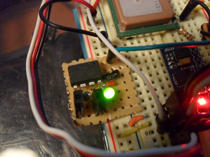

Autonomous Car pt. 1
July 1, 2012
This post will detail my plans and progress for an autonomous car. Using what I've learned from building the balancing robot and to put to good use everything I've learned from the courses though Udacity and MITx. The goal is to take a small 1/10 remote controlled car and have it navigate a course on its own. To navigate the course I’m planning on using an Android phone, GPS, and a accelerometer/gyroscope. I'll be recording a video stream through the phone and processing it on my laptop using Python and the computer vision library OpenCV.The Car
I choose a 1/10 scale car to be large enough to hold all of the electronics. I was a bit worried that the cheaper and more common 1/16 scale cars would be too small. I picked this car up on Amazon for about $100. Here's some pictures of it below. I've already started working on the electronics for it.

The Code
Below is a block diagram I drew that shows my preliminary design for the software portion of the car.
For the localization of the car I’ll be using a GPS sensor and accelerometer. First the GPS will find the starting coordinates of the car. From there the car will have to start moving somewhat blindly at first. Once the car is moving, data from the accelerometer and elapsed time can be used to calculate the velocity of the car. These two measurements are then passed into a Kalman filter to improve the accuracy of the cars position.
At the same time heading data from the GPS and gyroscope are passed into another Kalman filter to get an accurate heading on the car. The position and heading data from the Kalman filters is then compared to a GPS waypoint given to the sensor and motor control. From here a heading toward the desired GPS waypoint is calculated and the appropriate signal sent to the steering servo to point the car in that direction.
While all of that is going on the camera from the Android phone mounted on the car will be streaming images of the road ahead back to my computer. On the computer I’ll be using Python and OpenCV to process the images. The images will be processed looking for the edges of the road (width) and also looking for obstacles in from of the car. Data from the OpenCV program will be sent back to the motor control allowing the car to deviate from its previously calculated heading to avoid objects that may get in the way.
Below is the preliminary work I’ve done on the image processing. I’m using an app called Barnacle to set up a local network between my phone and laptop. Then sending the camera feed over HTTP. From here I’m using Python to grab a snapshot of the camera feed. I’ll walk through the steps of the image processing below. I’ll leave the discussion of the theory and mathematics behind these processing algorithms for another time and just stick with the results for now.
Here’s the original image on the left. The first step is to convert it to grayscale, shown on the right.

From the gray image I run a Gaussian filter to reduce the noise and avoid finding false lines later on in the processing (not shown). Then the result of the Gaussian filter is passed into a Canny edge detector to locate the edges.

From the Canny image you can already see the outline of the road. But if you look closely at the Canny image you’ll notice that those aren’t quite continuous lines. There are spots where the line breaks which will make doing any useful mathematics on it later more difficult. To fix this and clean up the image further I’m then applying a Hough transform to the Canny output. This transform is fairly complicated but the quick summary is that it looks for sections in the image that aren’t continuous but that form part of a larger line. For this part I’m also giving it a theta angle to restrict which lines it returns.

That’s it for now. From here I can make sure that the car stays in the middle of the road.
Next plans are to add obstacle detection.
Autonomous Car pt. 2
July 14, 2012
After a lot of work with the Python OpenCV library and testing the image processing on the car outside I've decided that I'll leave the computer vision part of this project for later. The simple line detection works well for images like the ones in my previous post. But on more complicated images, such as ones without yellow lane markers, line detection just wont cut it. I'm currently looking into using a neural network with OpenCV to keep the car on a road.
Right now I'm trying to get the steering working. The goal being that the car should steer into the direction of the next waypoint from it's current location. I also got a lot of new stuff for the car. Here's how it looks today. I upgraded to an Arduino mega (see below for why), Xbee for sending data wirelessly to my laptop, and a GPS module.

I spent a lot of time trying to get the steering working with the Arduino Uno. The problem is that the Uno only has one serial port. I was using this serial port for the Xbee communication. The GPS also needs a serial port so I was running that using the software serial library. The trouble is that software serial works on interupts and the steering and esc need to have a constant signal.
What would happen is that briefly when the interupt for the GPS would come on the signal for the servos would stop. This caused some serious erratic behavior and resulted in the car jumping off of my workbench several times. The Arduino Mega (borrowed from my 3D printer) gets around this problem by having 4 serial ports. This is more than enough for this project.
So for now I'm trying to get all the code and computations done on the Arduino. I'll leave the computer vision and machine learning stuff for later on. I'm also thinking about replacing the Mega with a much faster ChipKit Max32 which uses a 80MHz PIC32 microcontroller. The Mega is working well now but I'm worried that the 2D Kalman filter I plan on using for the localization will slow it down too much.
For the Arduino code:
Right now I have the GPS data parsed. I also added a LED indicator on the board that is on whenever there is a valid GPS data stream. This was nice for when I'm not by the laptop to see if it has valid data. The GPS heading data and the gyro rate data are sent to a Kalman filter. The GPS heading is very slow. Visually it seems to lag by 1-2 seconds. The car can reach up to 20mph so the car could move nearly 60ft before getting a new heading update. To fix this I'm using the gyro rate in between those updates to correct the car's heading. So far this is working but the updated heading is still a bit laggy. I need to do some tuning on the Kalman filter to fix this. The car will turn toward the waypoint but it ends up just going in circles because the angle isn't updated fast enough.
The updated angle is also sent to a PID control which, until I get the Kalman filter tuned, I've set the integral and derivative portions to zero. This will also need a lot of tuning later on. Here's the loop portion of the code below. I'll upload the rest on github later.
I also decided that I needed a way to regain control of the car if things started to go bad. There's a built in Arduino library called PulseIn which can be used to measure a pulse position modulation (PPM) signal that is put out by the radio receiver. The library can be a bit of a pain to work with. It stops the loop while measuring the time of the pulses and may completely stop the loop if it never seen the end of a pulse. This sounds like trouble so I decided to keep it off of the main control board all together.
I have several smaller ATtiny85 microcontrollers that would be perfect for this job. I wrote a quick program to read in the PPM signal from the receiver. I give the signal a bit of a range to avoid any false positives. Any signal that is outside of 1300-1700ms (the typical signal is around 1500ms) sends one of the pins on the ATtiny high. If the transmitter is on and in range then the ATtiny should see 1500ms. If it goes out of range then this will drop to zero. If I pull the trigger on the transmitter it will also cause the value to go out of it's set range.

Then back in the main loop on the Mega I added a part to read in the voltage coming from the pin on the ATtiny. A voltage higher than 1.0V means that the car is out of range or that I triggered the stop button on the transmitter.
Autonomous Car pt. 3
August 15th, 2012
It's been a while since my last update on the autonomous car project. Lots of things have been changed or redone. The biggest upgrade I did was replacing the Arduino mega with a Chipkit max32 which I had talked about in my last post. The increased speed of the Chipkit board has helped a lot. The first thing I noticed was that the loop time decreased from about 50ms on the Arduino to around 20ms with the Chipkit. This means that the gyro scope data can be updated much faster and has helped produce a more accurate heading. I've highlighted most of the car's new features in the image below.

One of the added bonuses of using the Chipkit is that it has a 3.3V logic level. This works out well since all the sensors are also 3.3V and I could easily add a SD card for data logging without having to buy a level converter or filling up my breadboard with tons of voltage dividers. I’m using a microSD card adaptor with a header soldered on it and a 512mb microSD card to the data logging. Keeping track of all the car’s data has been a huge help. I easily caught several bugs already that I would have otherwise had to spend days trying to figure out.
The LCD was also a very helpful addition. It was one thing to have the data saved on the SD card but being able to see the data right on the screen while the car was trying to drive it’s self into a river is very useful. Right now I've got it displaying the Kalman heading (from the GPS/Gyro), the GPS heading, the heading difference, and the distance to the next waypoint. That's about all that will fit on the small screen.


With all of that and a lot of work on the code the car is doing really well. I still need to get a video of it but for the run I did today the car drove down the street meeting 3 waypoints then returned to the starting point. The only intervention it needed was a quick save from driving into a deep puddle (no puddle detection yet). The image below shows the car's gps coordinates plotted on a map. The blue line is the calculated path between waypoints and the red line is the actual path the car took. Notice that it gets a little messy where the car turns around. That's where the car nearly drive it's self into a puddle.

The code is still far from ideal so I’m working on a few new changes right now. The GPS signal seems to be a bit noisy at times. Looking back on the heading data that I’ve collected during a run I can see that the car is properly correcting it’s heading to be on track to meet the waypoint. The problem is that a new GPS update will throw the heading off. Sometimes this has been as large as 15-20 degrees which cause the car to think that it’s way off course.
I thought the Kalman filter should take care of this but it doesn’t seem to. It may be a bug in my Kalman code or perhaps I need to smooth out the heading data first. I’m looking into both options right now. For the smoothing of the heading data I’m working on some code that will store several heading updates in a first-in-first-out array. That should smooth out any big changes in GPS heading.
I’m also working on adding dead reckoning to the code. With this the car will calculate it’s current heading off of only the gyroscope in-between GPS updates. This would also make it easy to add in a function that tells the car to only use the gyro if the GPS signal drops out or it the quality of drops too much.